HAUSPO Jatetxea
Cocina vasca a la brasa
Pescado y carne a la brasa, verduras de temporada y postres hechos en casa. Abrimos a mediodía de martes a domingo, y también por la noche los viernes y sábados.
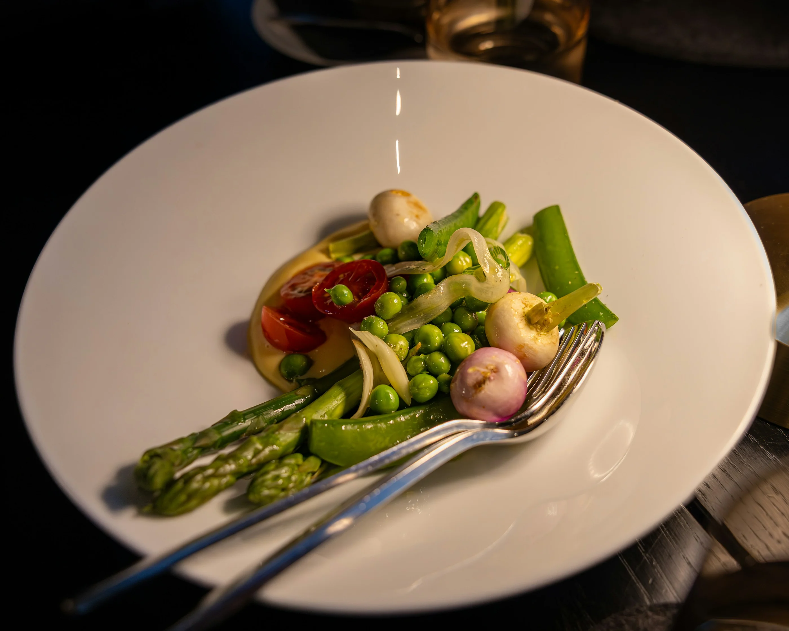
Nuestros platos
Lo que sale ahora de la cocina
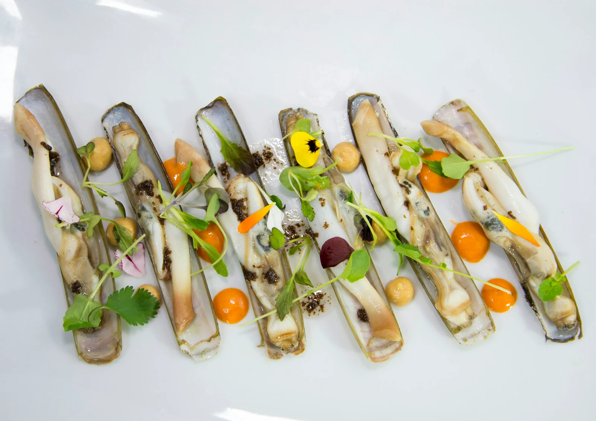
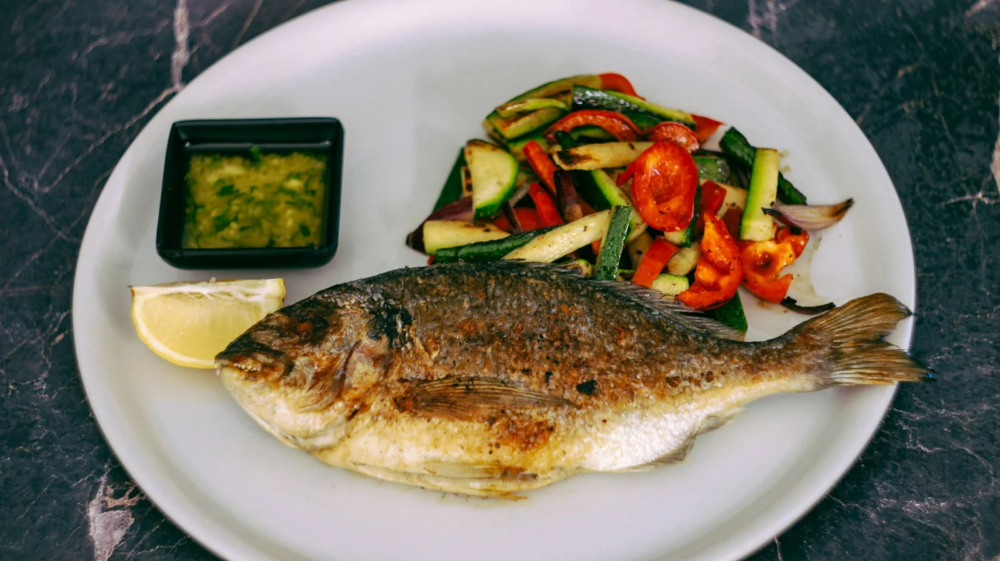
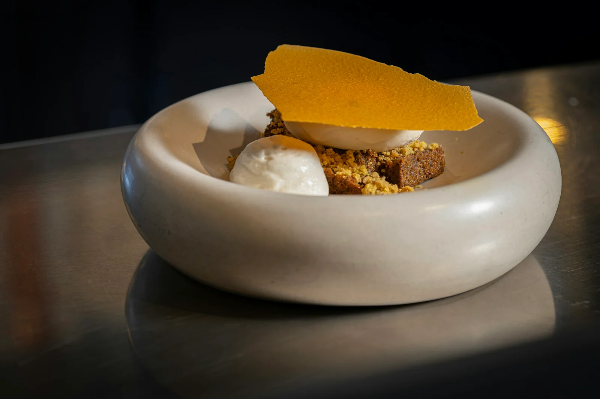
Carta
Precios con el IVA incluido
EntrantesHasierakoak
- Verduras de temporada: guisantes, espárragos y cebolletasSasoiko barazkiak: ilarrak, zainzuriak eta tipulinak14,00 €
- Ensalada de tomate de la huerta con ventrescaBaratzeko tomate entsalada sabelarekin13,50 €
- Anchoas en vinagre con piparrasAntxoak ozpinetan piperrekin11,00 €
- Croquetas caseras de bacalao (seis unidades)Bakailaoaren etxeko kroketak (sei unitate)9,50 €
- Chipirones a la plancha con cebolla confitadaTxipiroiak plantxan, tipula konfitatuarekin16,50 €
PescadosArrainak
- Besugo a la brasa con su refritoBisigua txingarretan bere errearekin26,00 €
- Bacalao al pil-pilBakailaoa pil-pilean22,00 €
- Merluza en salsa verde con almejasLegatza saltsa berdean txirlekin23,50 €
- Lubina entera a la brasa, para dos personasLupia osoa txingarretan, bi pertsonarentzat44,00 €
CarnesHaragiak
- Chuleta de vaca a la brasa, el kiloBehi-txuleta txingarretan, kiloa58,00 €
- Solomillo a la brasa con pimientos asadosAzpizuna txingarretan piper erreekin25,00 €
- Carrilleras de ternera al vino tintoTxahal-masailak ardo beltzarekin18,50 €
- Pollo de caserío asado con patatasBaserriko oilasko errea patatekin16,00 €
PostresPostreak
- Tarta de queso al hornoGazta-tarta labean6,50 €
- Torrija caramelizada con helado de vainillaTorrija karamelizatua banilla izozkiarekin7,00 €
- Cuajada con miel y nuecesEzti eta intxaurrekin gatzatua5,50 €
- Arroz con lecheArroza esnearekin5,50 €
- Sorbete de manzana y sidraSagar eta sagardo sorbetea5,50 €
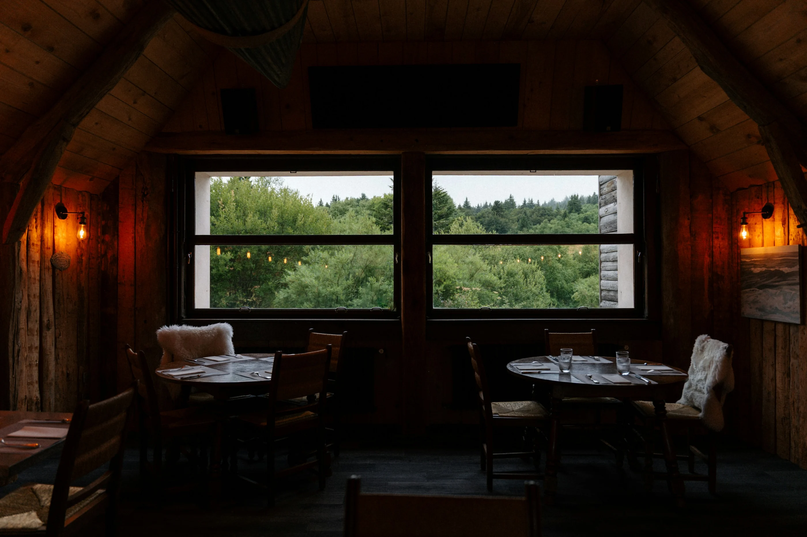
Desde la cocina
Brasa de encina y cocina abierta
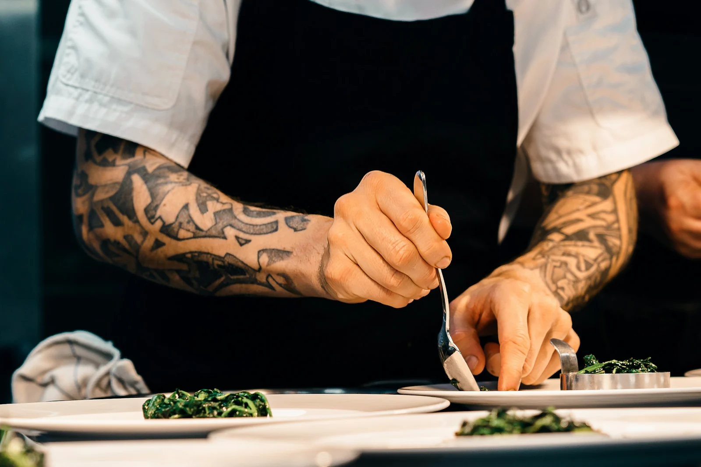
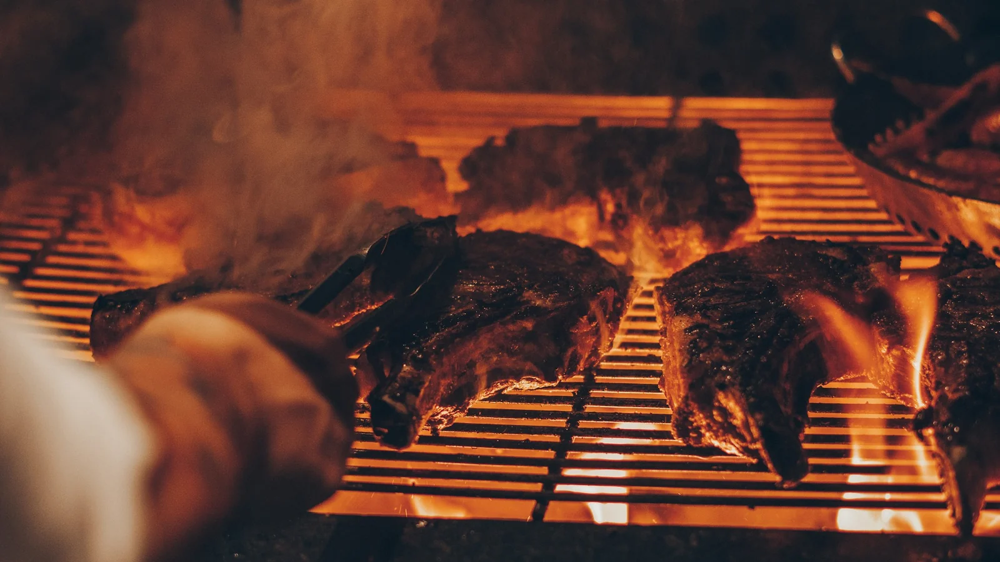
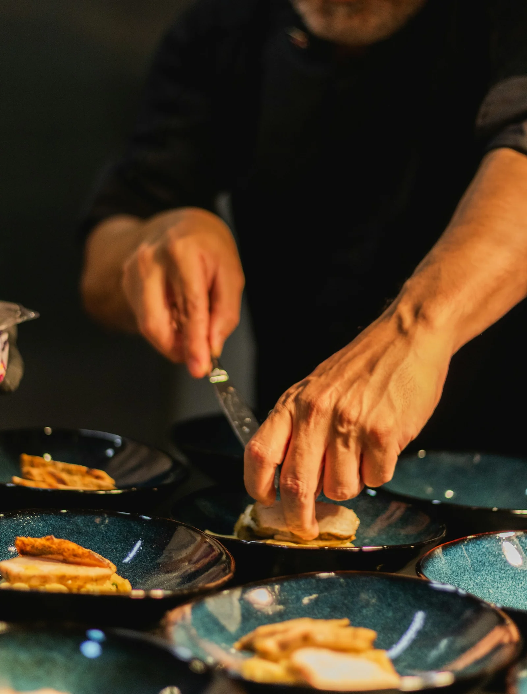
Menús de grupo
Vino, agua y café incluidos
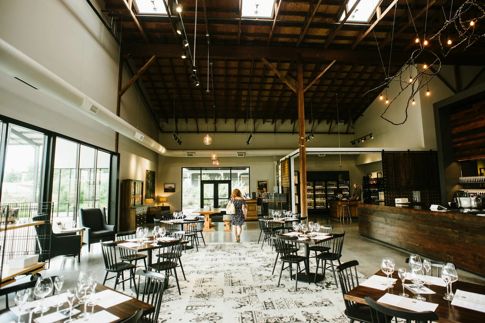
Bebida incluida: vino tinto crianza, txakoli y agua. Para grupos de ocho personas o más; reserva con dos días de antelación.
Reservas
Prueba la reserva: elige día y hora. No se envía nada.
Así le llega la reserva al restaurante
Nueva reserva · HAUSPO
- Día
- —
- Hora
- —
- Personas
- —
- Nombre
- —
Esto es una prueba: no se ha enviado nada.
Cómo llegar
En la calle mayor, entre la plaza y la estación
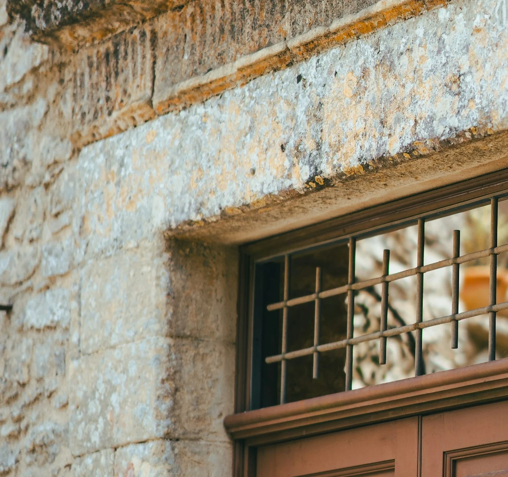
Dirección
Kale Nagusia 8, Tolosaldea
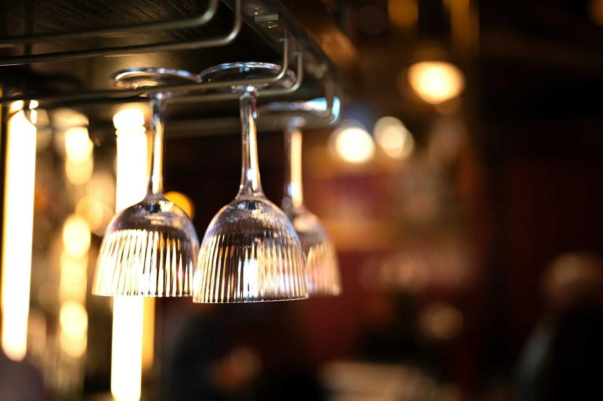
Horario
Martes a jueves, 13:00–16:00
Viernes y sábado, 13:00–16:00 y 20:30–23:00
Domingo, 13:00–16:00
Lunes, cerrado